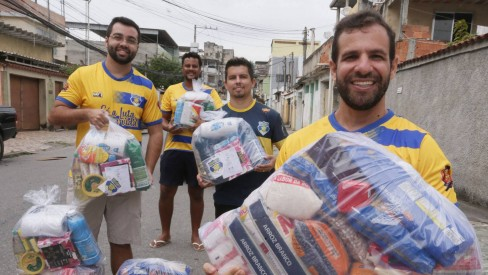
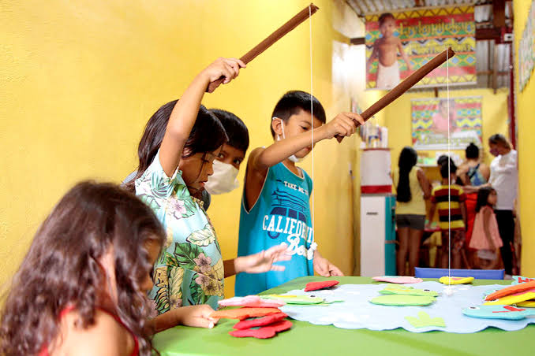
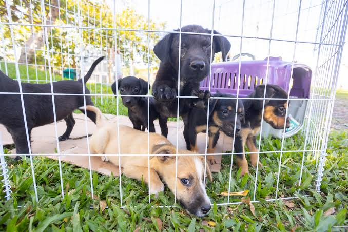

1. Projeto Prato Cheio
Arrecadação e distribuição de cestas básicas para famílias em situação de extrema vulnerabilidade.

Conheça nossas três principais frentes de atuação e escolha como você deseja colaborar:
Arrecadação e distribuição de cestas básicas para famílias em situação de extrema vulnerabilidade.

Aulas de reforço escolar, oficinas de tecnologia e atividades culturais para crianças e adolescentes.

Resgate, feiras de adoção responsável e cuidados veterinários para animais abandonados.
